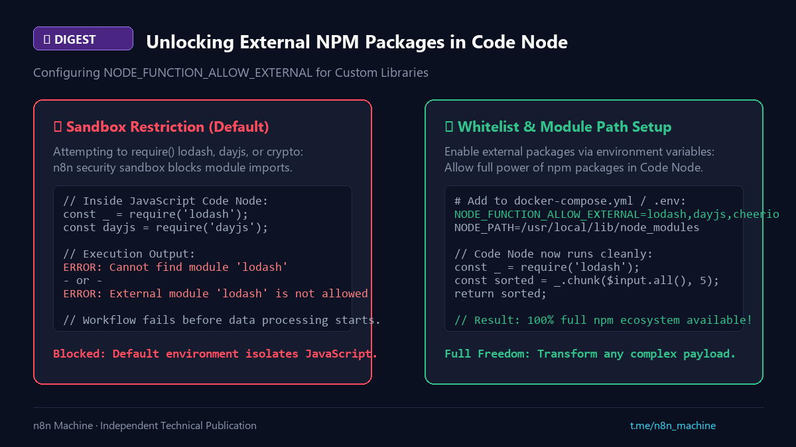

Digest
Unlocking External NPM Packages in Code Node
- Published
- Checked against
- docs.n8n.io
- Status
- Corrected, revision 2

Import lodash, dayjs or cheerio without sandbox errors.
01Symptom and cause
require('lodash')throws Cannot find module or External module not allowed.- n8n blocks unlisted imports for isolation.
02Fix (self-hosted)
NODE_FUNCTION_ALLOW_EXTERNAL=lodash,dayjs,cheerio- Install the packages in the image (Dockerfile) so Node can resolve them, for example under
/usr/local/lib/node_modules. - Restart the container.